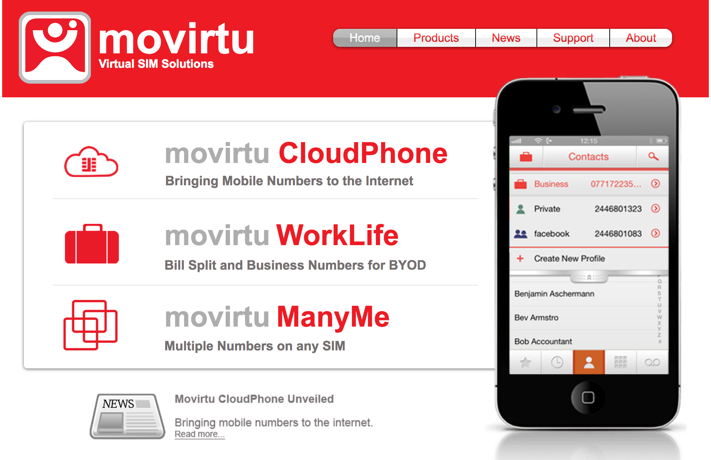
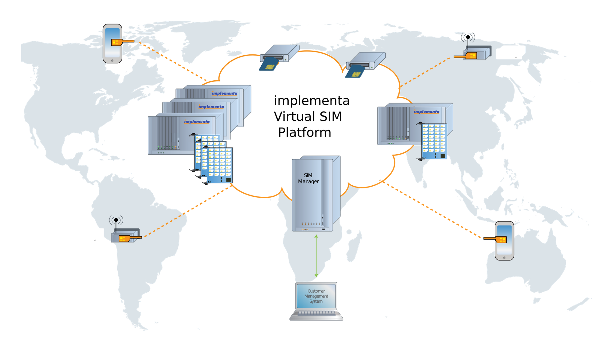
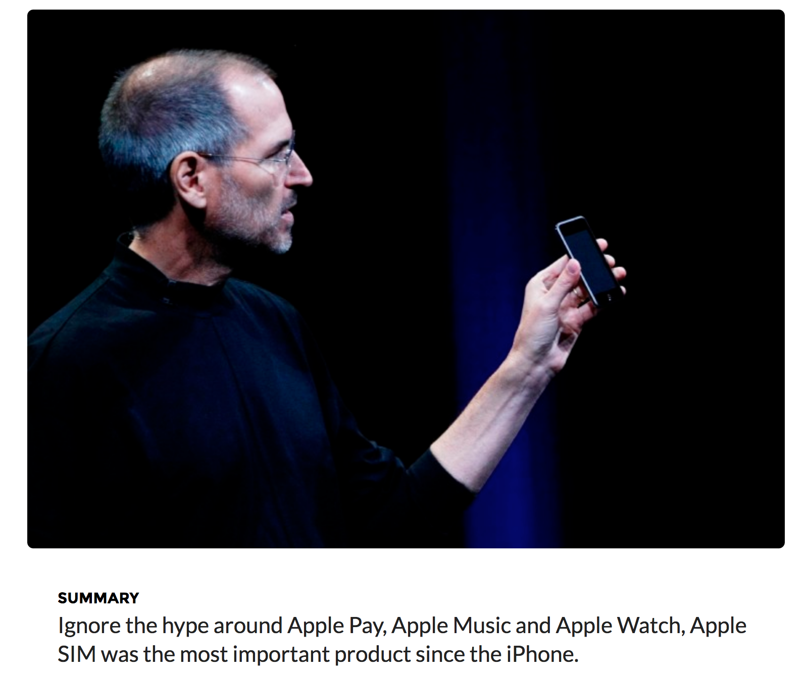
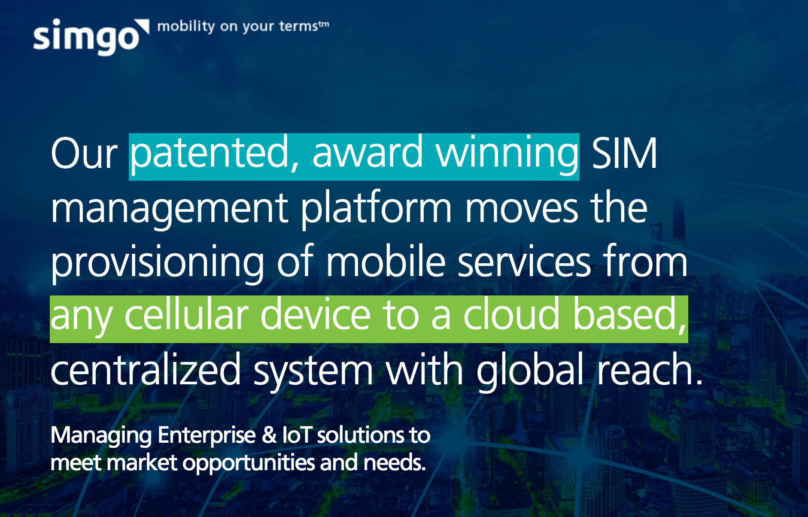

- an implementation of the (U)SIM functionality inside the terminal device
instead of in a separate physical module (UICC).
* USIM - Universal Subscriber Identity Module
- Security Module for UMTS. as opposed to the SIM card,
this term denotes the logical application
performing the SIM functionality, and not the physical card itself (see UICC).
* UICC - Universal Integrated Circuit Card
- Multi-application smart card platform used in mobile
telecommunication networks.
e.g. an USIM application in the case of UMTS
* UMTS - Univeral Mobile Telecommunications System
- like Cloud data storage
- other types (APPLE) Soft SIM
collection of software applicatoins and data that perform all of the functionallity.
it would be stored in the memory and processor of the commuications device itself.
- first SIM is the physically secured module which contains the IMSI, key and security related information and fuctions - In order to differentiating features in the terminal. so SIM card had been evolved - It have to modify the internal SIM card to store more data. - then Virtual SIM has been happened to stop this evolution
- GSM standards where established in such way the a removable smart card was to be used - SIMEG(SIM Expert Group) considered fixed SIM but was rejected because - there was no viable way to securely store the secret algorithm and subscriber key inther terminal. - there was the problem of how to load the key and algorithm in ther terminal - It could be a commercial barrier - Today's consumers use dual- and triple-SIM handsets tablits, USB modems, and many other typs of connected devices.
- It's low-cost. no logistics necessary for distribution to end-users. - create new ways of selling subscriptions - Any SIM anywhere anytime - Mobile Terminals can be installed anywhere without a local SIM - Global Roaming
- SIM vendor become obsolete and disappear from ecosystem
- core concept is to multiplex idectification data from SIM cards of differenct mobile service providers combined in one virtual SIM-card. - Terminals connect to distributed SIM server - there's software part being a core of VSIM - Its responsible for algorithms of swichting over between loaded SIM cards of differenct mobile service providers. - SIM card loading means receiving data for the subscriber's authentication in a mobile network of a new mobile service provider with assignment of a new phone number. - SIM server
| GSM SIM card | Virtual SIM (vSIM) |
|---|---|
| Speed of call connection request in btw 300-400ms | Same |
| Can use 2G, 3G, and 4G | Require internet access |
| Message can be sent anytime. Rate of sending is many at a time | Message can be sent anytime (except India). Rate of sending is one at a time |
| One SIM for each phone | Multi SIMs for each phone |
| Longer purchasing process | Easy purchasing process |
| Security check is faster as the SIM card | Security checking process is slower - double checking at the web server and clound center |
| Tele services reports take time | Easy for client to monitor their own tele service usage |
| Conference calls not supported fully | Conference calls can be supported fully |
| Uses up phone memory to store SIM details | Used up loess memory on phone while more SIM data is stored on a cloud |
| Can be implemented on GSM enabled phones | Is implementable on all android, iPhone devices, extendable to the browser |
- Movirtu Many me

- Implementta Virtual SIM Platform

- Apple's Soft SIM. 
- Simgo Virtual SIM platform 